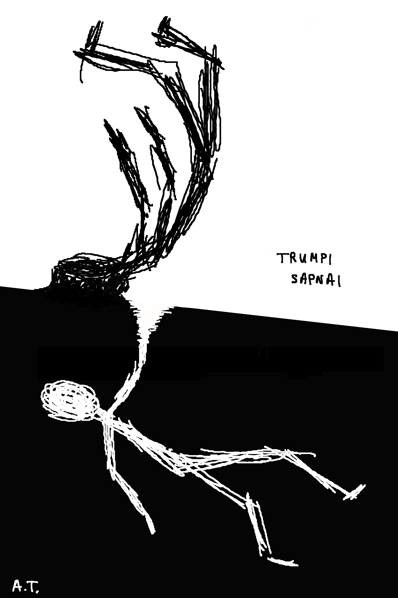

Trumpi sapnai
12 galvą laužančių trumpų istorijų apie sapnus
El. knyga išleista 2025‑07‑12
Fizinis leidinys – priedas prie „Pirmojo sniego“ knygos
← Grįžti į pradžiąKą darytum, jei labai gero sapno pabaigoje turėtum galimybę jame likti amžinai? Kas, jei dabartinis tavo gyvenimas – tai sapnas? Kas, jei galėtum nugalėti košmarus, tačiau tam turėtum paaukoti dalelę žmogiškumo? Į šiuos ir dar kitus klausimus atsakymus rasi šiose 12 trumpų istorijų.
Tai yra pirmasis oficialus mano, Audriaus Tyliūno, leidinys. Jame patalpinta labai trumpų istorijų apie sapnus. Dauguma šių istorijų jau yra mano pasakotos per slemus Vilniuje 2021 – 2023 m., tačiau yra ir keletas dar neišėjusių į viešumą.
Dauguma šių istorijų yra įkvėptos kitų žmonių pasakojimų arba savo paties patirtų jausmų. Pirmoji idėja buvo visas šias istorijas įlieti į „Pirmojo sniego“ knygas, tačiau vėliau supratau, kad turiu per daug idėjų, ir rašyti romaną užtrunka per daug laiko. Todėl sugalvojau toms idėjoms suteikti nedidelį kūną, slemo skaitinių pavidalu.
Elektroninį knygos leidimą jau galite skaityti! O nuo rugpjūčio 1 d. bus galima įsigyti ir popierinį leidimą, kuris bus sudėtas į vieną knygą su kitais mano kūriniais. Galite pridėti į norų sąrašą čia.
Atsisiųskite elektroninę knygą:
Nemokama! Tačiau galite paremti :))
Paremti dabar